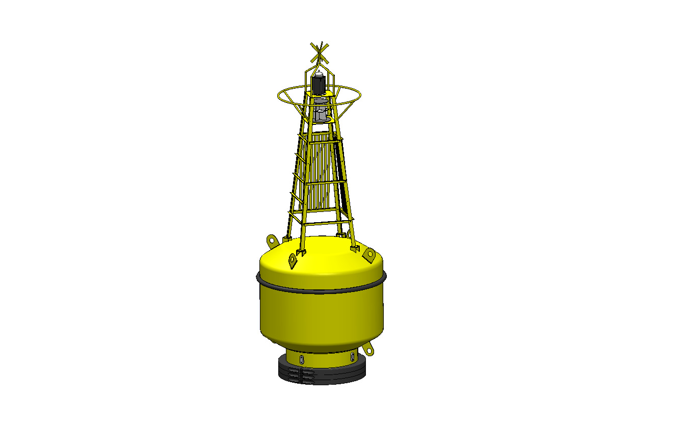
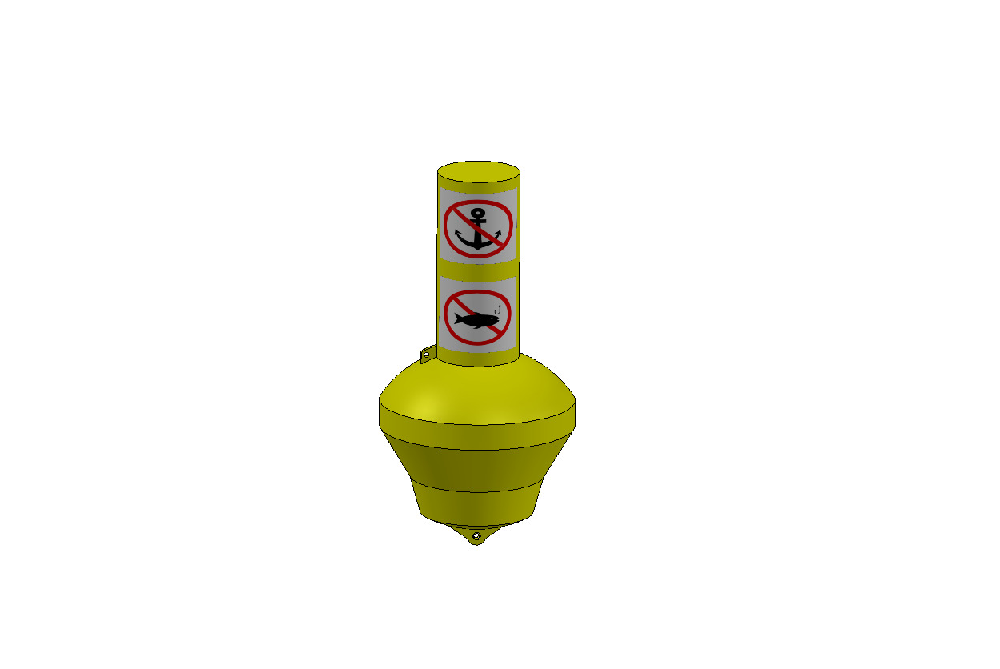
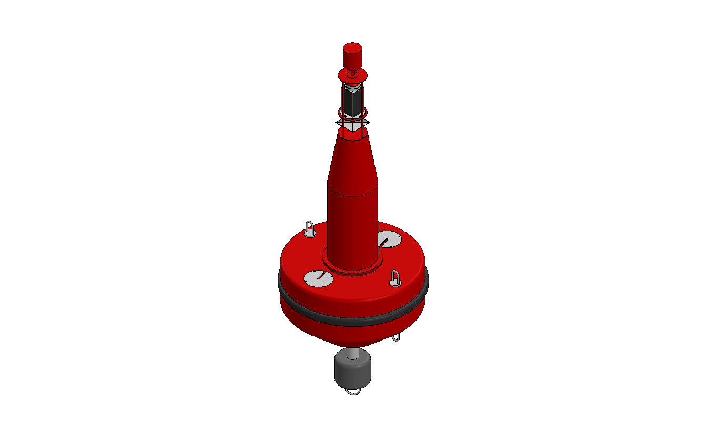

Wind Farm Buoy
Specialized marking and monitoring solutions designed specifically for the rigorous demands of offshore wind energy infrastructures. These buoys ensure safety and compliance during both construction and operational phases.
Key Features
- Offshore Compliant: Designed to meet IALA recommendations and local offshore wind regulations.
- High Visibility: Equipped with high-intensity lanterns and radar reflectors for maximum detection.
- Durability: Constructed from UV-stabilized polyethylene or robust steel to withstand harsh offshore conditions.
- Monitoring Capable: Can be integrated with MetOcean sensors to provide real-time environmental data.
- Easy Deployment: Optimized hull design for stability and ease of handling by service vessels.
- Low Maintenance: Built for long service intervals to reduce operational costs in remote locations.

Click to Enlarge

